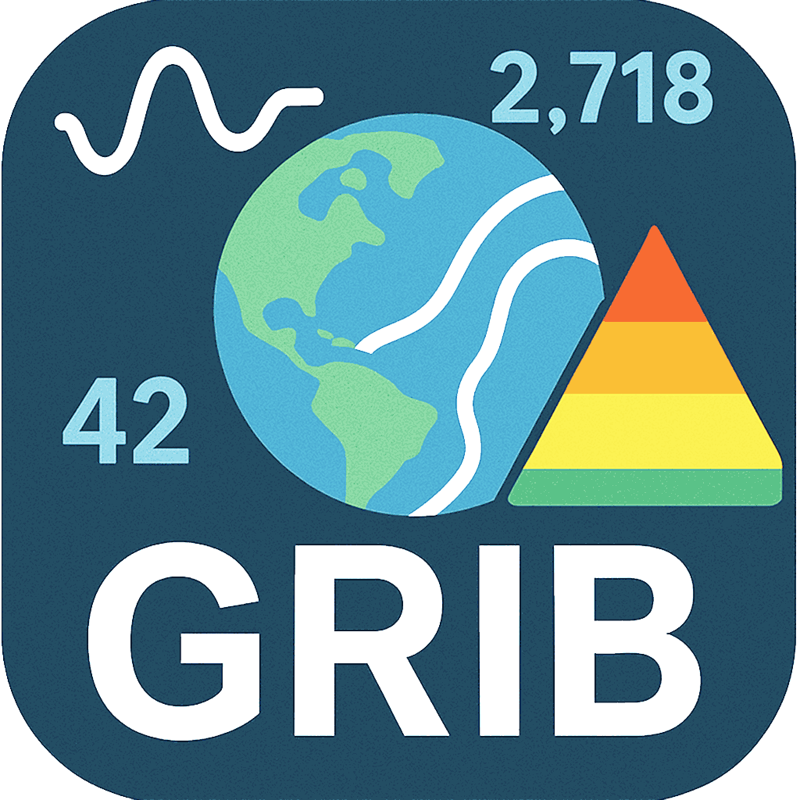

Blazing-fast GRIB browsing (OpenGL + ecCodes), reorganize/merge/append/filter messages, export CSV time series/point values, PNG, and save compact GRIB archives.
New release: gribview 1.4.0
Available for macOS, Linux and Windows.
Open the DMG, drag Gribview.app into Applications, then open Gribview.
brew install --cask filippi/gribview/gribview-appOpen Gribview from Applications or Spotlight.
brew install filippi/gribview/gribview
gribviewInstalls the gribview command. Start the viewer from your terminal.
In the downloaded file's Properties > Permissions, allow it to run as a program. Then double-click it.
chmod +x Gribview-1.4.0-x86_64.AppImage
./Gribview-1.4.0-x86_64.AppImageIf FUSE is unavailable, choose the portable archive instead.
Open the downloaded file in your software installer. Then open Gribview from your applications menu.
sudo apt install ./gribview-1.4.0-Linux-x86_64.debExtract the archive and open gribview inside. No administrator access or FUSE needed.
Open a terminal in the extracted folder and run:
./install.shRequires Python 3.
python3 -m venv gribview-env
gribview-env/bin/pip install --index-url https://filippi.github.io/gribview/wheels gribview
gribview-env/bin/gribviewRequires Python 3.9+. Installs the packaged viewer from the project index, without compiling.
Extract the ZIP, open the bin folder, and double-click gribview.exe. Keep the other extracted files alongside it.
If macOS blocks Gribview, open System Settings > Privacy & Security and choose Open Anyway after attempting to launch it.
gribview is an open-source GRIB explorer built by Jean-Baptiste Filippi (CNRS / Universita di Corsica). It’s tuned for fast OpenGL viewing, reorganizing/merging/filtering messages, extracting CSV time series/point values, and exporting PNGs or compact GRIB archives.
Check for updates